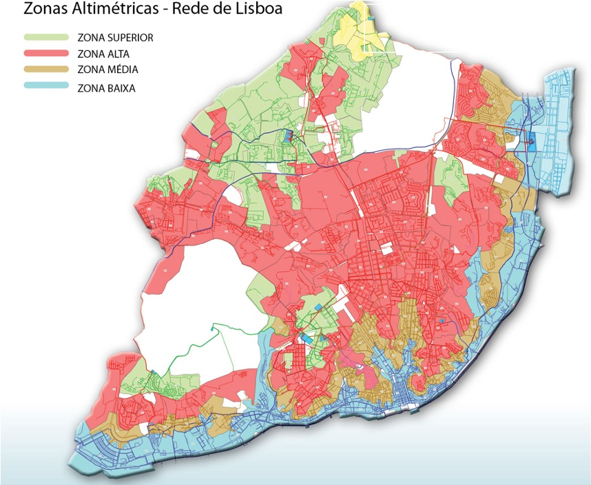

Web Geográfica
Aplicações para a análise espacial
1 O que √© um SIG? üåéÔ∏è
Um sistema informático para analisar e visualizar dados espaciais
1.1 Projeção
Uma superfície esférica 3D não pode ser convertida num mapa 2D sem distorções
- Tal como tentar achatar a pele de uma laranja (P)
- É igualmente necessário refletir o relevo da superfície da Terra
1.2 Projeção mundial
Projeção Mercator
A deformação aumenta com as latitudes, sendo a Gronelândia e a Antárctida muito maiores do que a realidade
Waterman “borboleta”
Uma das projecções com menos distorção
Pictures: Wikipedia
1.3 Projeção mundial
- Comparação da matriz de deformação de Tissot
Projeção Mercator
Waterman “borboleta”

Pictures: Wikipedia
1.4 Distorção
1.5 Projeção local
Utilização de projecções locais para reduzir as distorções
1.6 Projeção local
Utilização de projecções locais para reduzir as distorções
1.7 Projeção local
Utilização de projeções locais para reduzir as distorções
1.8 Camadas üî∞
Com o SIG, os mapas são constituídos por uma sobreposição de camadas.
1.9 Algumas no√ß√µes básicas para a cria√ß√£o de mapas Ô∏èüß≠
Fornecer algum contexto (fronteiras municipais, cursos de água…)
Pode utilizar um pequeno mapa para localizar a sua área de estudo a uma escala maior
Os mapas precisam de legenda, barra de escala e seta para norte
Adicionar título, de preferência com um comentário
Não se esqueça de citar a fonte de dados
1.10 Não (apenas) para mapas bonitos…
Podem ser efectuadas várias operações de geoprocessamento para uma única camada ou entre camadas
2 Camadas num SIG üåéÔ∏è
2.1 Dois tipos principais de camadas
Raster
- Grelha regular de células ou pixéis
- Um ou vários valores por célula
2.2 Exemplos de dados raster
- Fotografia aérea: Os valores dos pixels correspondem à cor do solo
Fonte: remonterletemps.ign.fr
2.3 Exemplos de dados raster
Deteção remota: Imagens multiespectrais
- Três resultados para a radiação solar recebida: absorção, reflexão ou transmissão
Para cada comprimento de onda, a reflectância (\(R\)) é calculada da seguinte forma \(R = ϕr /ϕi\)
Dinâmica do fluxo luminoso que chega a uma folha
2.4 Exemplos de dados raster
Deteção remota**: Imagens multiespectrais
Vários satélites fornecem dados de reflectância com uma resolução de 10 a 30 m, como o Landsat ou o Sentinel-2
Cada raster pode ser processado isoladamente ou combinado como um índice de vegetação, como o Índice de Vegetação por Diferença Normalizada ou Normalized Difference Vegetation Index (NDVI)
\(NDVI = ϕr /ϕi\)
 Time lapse da evolução do NDVI
Time lapse da evolução do NDVI
2.5 Exemplos de dados raster
Modelo Digital de Elevação (DEM): Dados de elevação
Um DEM é um raster da topografia da superfície do solo
- Cada célula indica a elevação média numa determinada posição
2.6 Exemplos de dados raster
Modelo Digital de Terreno (MDT): Dados de elevação
Um MDT é um raster da topografia da superfície do solo
O SIG pode converter estes dados em raster de declive, exposição…
- À direita: Cada célula apresenta a exposição principal numa determinada posição

2.7 Formatos de camadas raster
Os ficheiros geográficos raster são como ficheiros de imagem
Assim, o formato de um ficheiro raster é frequentemente o de um ficheiro de imagem (.tif, .ecw, .jpg, .png…)
Mas, para além dos dados de imagem, os ficheiros raster têm informação de posicionamento, que podem ser armazenadas num ficheiro separado ou no mesmo ficheiro num formato GeoTIFF (.tif ou .tiff)
2.8 Dois tipos principais de camadas
Raster
- Grelha regular de células ou pixéis
- Um ou vários valores por célula
Vetor
- Conjunto de formas geométricas (pontos, rectas ou polígonos)
- Com uma tabela de atributos que descreve cada elemento
2.9 Exemplos de dados vetoriais
Com os vetores, as entidades espaciais elementares não são células mas formas geométricas: [pontos, linhas ou polígonos]{.bg style=“–col: #e6ffe6”}
2.10 Exemplos de dados vetoriais
As variáveis de diferentes tipos (numéricas, factoriais, texto…) podem ser armazenadas na tabela de atributos para definir cada item
Uma tabela por ficheiro vetorial, com uma linha por item
| Município | Código postal | População | Área (km2) |
|---|---|---|---|
| Almada | 2800 | 177400 | 13,98 |
| Moita | 2860 | 66262 | 55,26 |
| Sesimbra | 2970 | 52394 | 195,47 |
| Seixal | 2840 | 1666525 | 95,5 |
| Setúbal | 2900 | 123519 | 51,42 |
2.11 Exemplos de dados vetoriais
- Os vetores são úteis para elaborar mapas coropléticos, nos quais as unidades espaciais são coloridas ou sombreadas para indicar os valores médios de um indicador
Primeiro mapa coroplético: Educação popular em França (Dupin, 1826)
Legenda: De 1 aluno por 10 habitantes a 1 aluno por 268 habitantes, do mais claro ao mais escuro
2.12 Exemplos de dados vectoriais
- Os mapas coropléticos são adequados para mostrar valores estatísticos por entidade administrativa
## Exemplos de dados vetoriais
- O princípio dos mapas coropléticos pode também ser aplicado a vetores pontuais
- Para produzir um mapa de rendimento, a tabela de atributos fornece o peso estimado, a humidade, a largura de trabalho…
2.13 Exemplos de dados vectoriais
Num cartograma, é o tamanho das entidades que é proporcional ao indicador cartografado

2.14 Formatos de camadas vectoriais
Existem vários formatos para ficheiros vectoriais
GeoJSON (.geojson, .json), GeoPackage (.gpkg), .kml e .kmz… O formato shapefile é um formato popular de dados vetoriais desenvolvido e regulado pela Esri
Cada shapefile é composto por vários ficheiros
- .shp, .shx, .dbf (table of attribute), .prj (optional file with CRS)…
- Todos os ficheiros devem ser guardados na mesma pasta, com o mesmo nome
3 Alguns exemplos de software GIS üåéÔ∏è
3.1 Softwares especializados
Gratuito, fonte aberta
Comercial

3.2 Softwares não especializados
3.3 Softwares baseados na nuvem
4 Um exemplo de aplica√ß√£o SIG na Web üåéÔ∏è
4.1 Sistemas de Abastecimento de Água
Rede de Distribuição de Água na Cidade de Lisboa (2016):
- 1448 km de condutas;
- 86.000 ramais de abastecimento;
- 9500 análises à qualidade da água;
- 10.000 operações;
- Cerca de 300 000 contratos.
- …

Physical network composed of pipes, pumps, valves that needs operations and manutentaion vast dataset: cadastral; accounting and billing; operation and maintenance; energy consumption associated with volumes supplied to the system prediction, modeling and analysis models.
4.2 Sistemas de Informação nos Serviços de Abastecimento de Água
SIG
Telemetria
Telemetria
geographic information systems (GIS); ERP systems (“Enterprise Resource Planning”); customer management systems; accounting support systems; telemetering and remote management (SCADA) systems. Billing Systems Operation and manutention
4.3 Perguntas de investigação
como é que as empresas de abastecimento de água gerem a sua informação e tomam decisões de gestão?
Como é que a agência pública nacional avalia a gestão das empresas de abastecimento de água
… A fim de melhorar o conhecimento que as empresas de abastecimento de água têm das suas infra-estruturas hídricas
4.4 Parceiros
InfraQuinta - Quinta do Lago

The degree of maturity of the utilities in Portugal is quite different, explained by different management models, geographical context and financial capacity.
4.5 Serviços de Abastecimento de Água
Rural VS Urbano: CM de Reguengos de Monsaraz vs CM do Barreiro

4.6 Os Serviços de Abastecimento de Água não são uniformes
Reasons: Few clientes -> few resources When manage by municipalities, water facility is only one of the other services
4.7 Inquérito Nacional
Município do Barreiro
The data are dispersed by different IS, and there is a need to resort to several actors to extract and process these data.
EG engineering technicians must have a platform that aggregates the different data dispersed by the different ISs, in order to obtain the best possible knowledge of the infrastructures they manage.
4.8 Uma Plataforma Cloud Integrada
Desenvolvimento de caixas de ferramentas para avaliar o sistema de água e ajudar na tomada de decisões.
- 16 Métricas para medir a saúde do sistema
- Avarias nas condutas
- Água não facturada
- Perdas de água
- …
- Módulo de representação geográfica;
- Módulo de simulação hidráulica;
- Balanço hídrico
- Balanço energético
4.9 Modelação do Domínio
4.10 Arquitectura da Plataforma

4.11 Carregamento da Informação
4.12 Dashboard cliente
4.13 Resultados
API Pública Com 16 Métricas sobre os Sistemas das Empresas de Água
plataforma Na Nuvem
- para Importar Dados em Formato Standard
- visualização De Informações e Métricas
Boas Práticas De Gestão Da Informação
Grueau, Cédric; Antunes, André; Ferreira, Bruno; Gonçalves, Miguel; Gomes, João; Carriço, Nelson. “Towards an Integrated Platform for Decision Support in Water Utility Management”. in Proceedings of 12th IADIS International Conference on Information Systems, Utrecht, 2019. DOI: 10.33965/is2019_201905c00
4.14 Mais alguns exemplos
- Potencial de painéis solares
- Avaliação do tráfego
- Gestão de frotas
5 Web GIS üåéÔ∏è
Aplicações Web com características SIG
5.1 Estacionamento nas cidades
Map Seety
5.2 Potencial de paneis solares em telhado
5.3 Recursos úteis
Learn how to make cartogram with R, The R Graph Gallery
Making maps with R, Benjamin Nowak
Handling Digital Elevation Model with Google Earth Engine, Benjamin Nowak